Case study · Final-year project — Albarray Consulting · Individual · 2026
Photovoltaic anomaly detection
Detecting inverter and shading faults on a solar plant without ever training on a labelled fault, then scoring incoming measurements as they arrive.
This page follows the work in the order it was done — including the parts that did not work. Three million raw rows reduced to a study period, a feature set chosen by ablation rather than intuition, a baseline that was later removed from the final system, two autoencoders combined by rank, a threshold that encodes an economic judgement, and a single opening of the test partition at the very end.
Objective
Photovoltaic plants fail quietly. Soiling, partial shading and inverter faults do not stop production; they bend it downward by a few percent, for days or weeks, until someone compares an invoice to an expectation. The output still looks like output.
The obvious answer — train a classifier on past faults — collides with the reason the problem exists. Operators rarely keep labelled fault archives, and when they do, the archive covers the failures that were noticed. So the system is built the other way round: learn what a healthy plant looks like, and flag departures from it. No fault is ever shown during training.
Constraints that shaped every later decision
- No labels at training time. Labels exist in this dataset, but they are used only to select a threshold and to report results — never to fit a model.
- Recall over precision. A missed fault costs weeks of production; a false alarm costs one technician one look.
- Early detection. A fault caught on its first measurement is worth far more than the same fault caught on its fortieth.
- Streaming. The system must score one five-minute measurement at a time, without access to the batch it belongs to.
That last constraint shaped more of the design than any modelling choice. A score that depends on the batch it is computed in is easy to obtain offline and meaningless in production, where the batch is a single point. It is the reason the final fusion ranks against a frozen reference rather than against the current data.
The raw data
The source is an open dataset from a grid-connected plant in La Réunion, published on Zenodo. It arrives as two files recorded by two different acquisition systems, which is the first problem to solve.
| File | Contents | Volume |
|---|---|---|
| dt1 — meteorological | Diffuse and global irradiance (DTI, GTI), ambient and panel temperature (TA, TPV) | 2.14 GB, sampled every second |
| dt2 — electrical | Inverter and grid currents and voltages (Ia, Ig, Va, Vg), power (Pg), energy (Eg), frequency (Fg), plus the Fault label | 193 MB, 2,988,814 rows |
What the labels actually contain
The Fault column is not binary. It encodes a fault taxonomy, and the
distribution across the raw file is extremely uneven: type 4.0 — intermittent
shading — accounts for 61,297 of the 84,525 flagged seconds, while type 3.1 appears
only 2,717 times. That imbalance between fault types, not just between
healthy and faulty, returns at the very end of the project: the test partition
happens to contain only type 3.1.
Both files carry timestamps as strings with a +04:00 offset — La
Réunion time. Parsing them without normalising to UTC would have shifted one stream
against the other by four hours and joined every measurement to the wrong weather.
The format was checked explicitly on both sides before any join was attempted.
Merging two clocks
The two files cannot be joined as they stand. They start on different dates, they are sampled at different rates, and neither guarantees a measurement at any given instant. Joining on exact timestamps would return almost nothing.
Both streams are therefore resampled onto a common five-minute grid by averaging within each bucket, then joined on that grid. Five minutes is short enough to catch the onset of an episode — the shortest incident in the dataset lasts about six minutes — and long enough to smooth acquisition noise and make 2.3 GB of raw input tractable.
The result is 53,016 rows across 12 columns, spanning 28 October 2021 to 13 April 2023. Because the merge takes ten minutes and needs both raw files, its output is cached in the repository; a clone without the 2.3 GB of raw CSVs reloads the cache and continues from there, and the notebook detects and announces which of the two situations it is running in.
Cleaning
Cleaning an anomaly detection dataset is a delicate exercise, because the standard cleaning move — remove the outliers — removes exactly what the project is trying to find. Every filter here had to be justified by a physical argument rather than a statistical one.
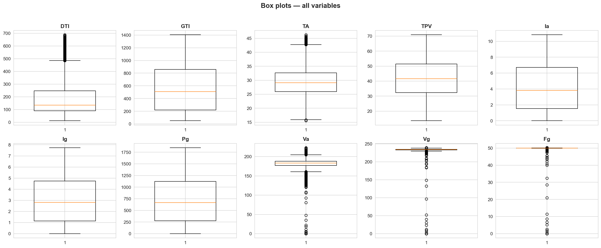
Physical plausibility
The first pass checks values against physics rather than against quantiles: negative
power, irradiance above 1,500 W/m², sub-zero panel temperature. All three came back
empty. One check did not: 57 rows carry Va = Vg = Fg = 0
simultaneously. A grid-connected inverter cannot have zero voltage and zero
frequency while the sun is up — that is a disconnected acquisition unit, not a plant
state. Those 57 rows were removed, leaving 52,959.
Statistical outliers, deliberately kept
Two standard detectors were then run purely as diagnostics, and their results are worth reading against each other.
| Sensor | Z-score > 3 | IQR rule |
|---|---|---|
| Va | 689 (1.30%) | 1,389 (2.62%) |
| DTI | 431 (0.81%) | 1,470 (2.77%) |
| Vg | 73 (0.14%) | 1,438 (2.71%) |
| Fg | 73 (0.14%) | 1,343 (2.53%) |
| GTI, TPV, Ia, Ig, Pg | 0 | 0 |
The two methods disagree by a factor of twenty on Vg, which is itself informative:
the Z-score assumes an approximately normal distribution, and grid voltage is not
normal. But the decisive point is the sensor at the top of both columns. Va —
inverter output voltage — is where the anomalies live, flagged at a rate close to
the 2.8% fault rate of the dataset. Deleting those rows would have deleted the
signal. Nothing was removed on statistical grounds, and va_deviation
later became one of the four most discriminating engineered features.
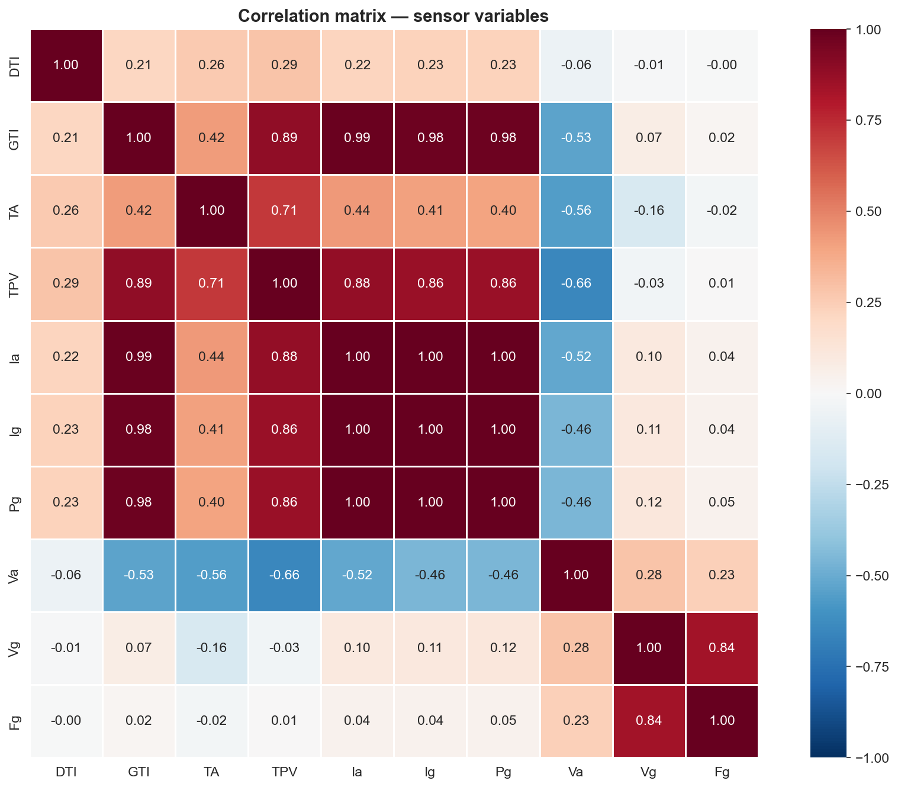
Several sensors carry the same information twice — irradiance and generated power correlate at 0.98, and the current channels track each other closely. For a reconstruction model this matters: a redundant input is an easy reconstruction target that inflates apparent performance without contributing detection power. This matrix is the first argument for the ablation studies that follow, rather than for feeding everything to the model.
Exploration
Six views, each of which changed a later decision. This is where the project's constraints stopped being assumptions and became measurements.
How rare is a fault, and which kind
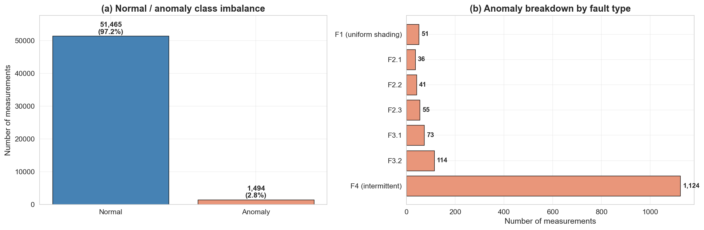
After resampling, 51,465 of 52,959 measurements are normal. The 1,494 anomalies break down into 1,124 points of intermittent shading (type 4) and between 36 and 114 points for every other type. Two consequences follow. First, accuracy is useless here — flagging nothing scores 97.2%. Every number on this page is therefore PR-AUC, area under the precision–recall curve, quoted against the base rate of its partition. Second, the rare fault types have so few points that no model can be tuned on them individually.
The relationship the whole project rests on
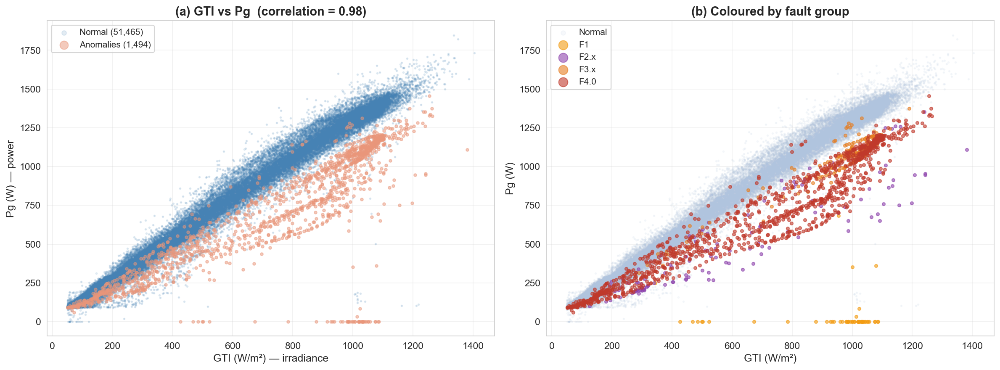
Power and irradiance correlate at 0.98 along a near-linear relation — and the
anomalies form a distinct cloud underneath it. At equal available light, a
degraded plant produces less. That single observation is the physical basis of the
project, and it directly motivated the yield feature ratio_pg_gti built
two sections later. Neither variable alone shows anything; their ratio does.
Where else the fault shows up
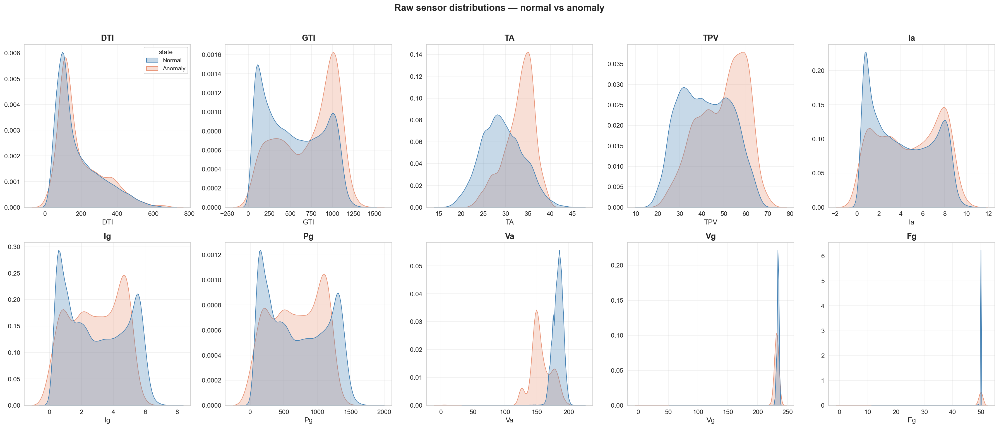
Most sensors overlap almost completely between the two classes — which is why a
single-variable threshold rule was never a candidate. Two exceptions stand out: the
AC voltage Va and the currents Ia and Ig show a visible shift. That observation
produced va_deviation, and the shape of the shift — a spread rather
than a translation — suggested measuring a deviation from an expected value rather
than a raw level.
The finding that saved the split
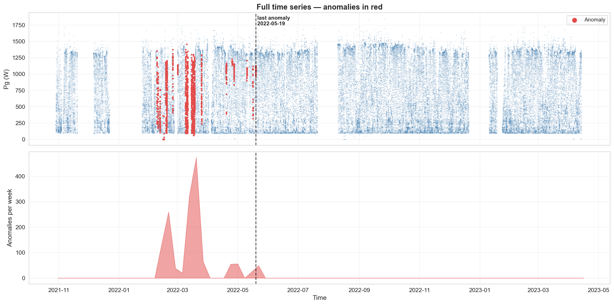
This is the most consequential plot in the exploration. The dataset runs to April 2023, but the last labelled anomaly occurs on 19 May 2022. Everything after it — 35,684 rows, 67% of the record — is pure normal operation. A chronological split over the full series would have placed the entire test partition in that empty zone, and the final evaluation would have been run on a period containing no faults at all: a perfect, meaningless score. The study period had to be truncated, and this figure is why.
Day, night, and why sequences must break
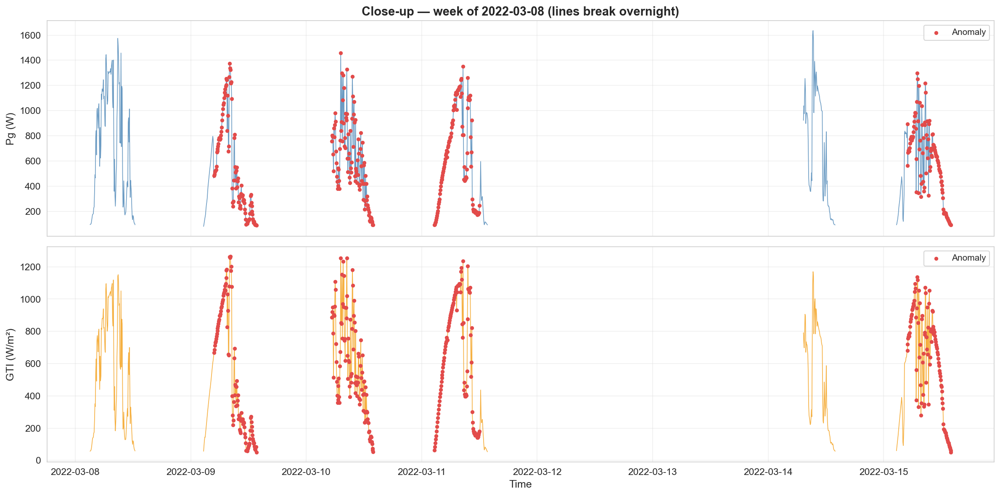
Zooming to a week shows the day/night cycle and, more importantly, that night is simply absent from the record — consecutive rows can be five minutes apart or twelve hours apart. Any operation walking consecutive rows would silently build an evening-to-morning transition that never happened. This is where the seven-minute gap rule was introduced; it reappears in the episode segmentation, the LSTM sequence builder, and the streaming buffer of the deployed consumer.
When faults happen
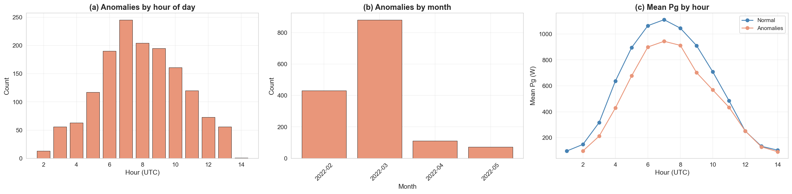
Anomalies concentrate in daylight, peaking around 07:00 UTC, and cluster in February–May 2022 with a strong March peak. The right-hand panel is the useful one: at every hour of the day, anomalous power sits below normal power. The deficit is present regardless of the sun's position, confirming that a sun-normalised yield — rather than raw power — is the right quantity to model.
Study period and incidents
Following the exploration, the record was restricted to the period that actually contains faults: 28 October 2021 to 26 May 2022. That is 18,057 rows, 34.1% of the cleaned dataset, containing all 1,494 anomalies. The 34,903 rows dropped contain exactly zero.
Faults are episodes, not points
Within that window the anomalies group into 17 contiguous incidents. They are not scattered outliers — each is a run of degraded measurements with a beginning and an end, lasting from six minutes to 78 hours.
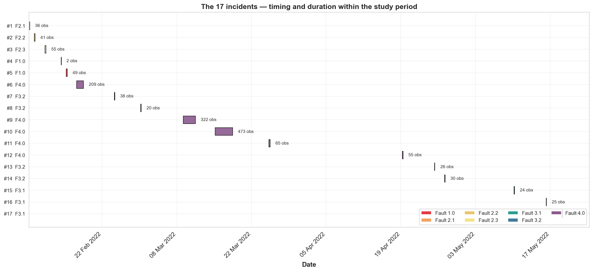
| Type | Incidents | Duration range |
|---|---|---|
| 4.0 — intermittent shading | 5 | 4.5 h – 78.8 h |
| 3.2 — partial shading | 4 | 1.6 h – 3.1 h |
| 3.1 — partial shading (test only) | 3 | a few hours |
| 2.1 / 2.2 / 2.3 | 3 | 2.9 h – 4.5 h |
| 1.0 — uniform shading | 2 | 6 min and 4.7 h |
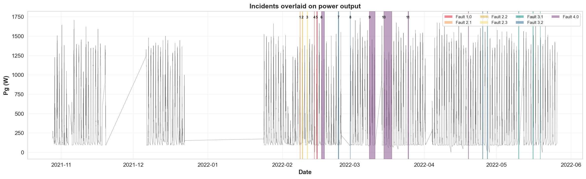
Overlaying the incidents on the production curve shows how varied the signature is. Some episodes carve an obvious notch out of the daily curve; others are barely distinguishable from a passing cloud at this scale. That variety is the argument against a single detector — a model tuned to catch abrupt drops will not catch the subtle ones, and the reverse.
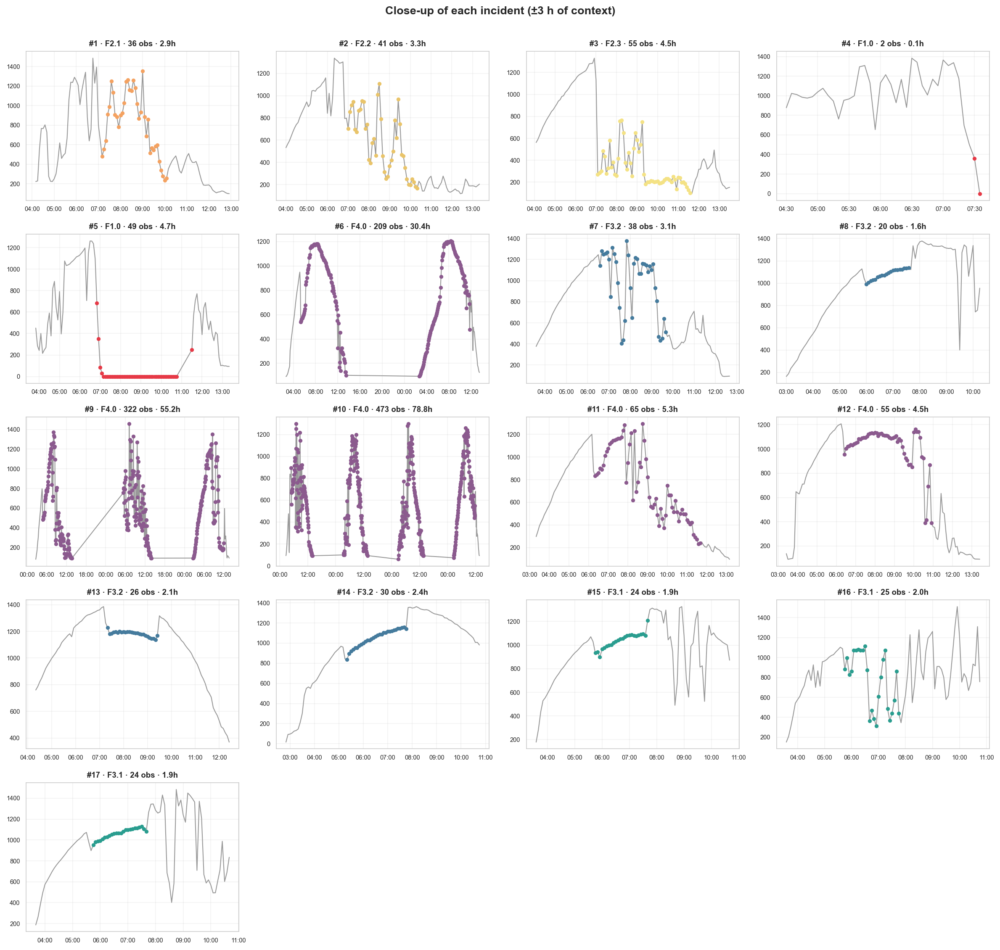
Zoomed one by one, two families appear. Type 4 episodes are jagged — the shading comes and goes within the episode itself. Type 3 episodes are smooth depressions maintained over hours. A point-wise model can catch the first family; the second is what motivated adding a sequence model, since any single point inside a smooth depression looks unremarkable and only the trajectory is abnormal.
Episode-level evaluation
Because faults are episodes, point metrics alone misrepresent operational value. An incident lasting forty measurements and caught on the third is an operational success, even though thirty-seven points were "missed". Every model in this project is therefore scored twice: at point level, and at episode level — an incident counts as detected if at least one of its points crosses the threshold, with the detection delay recorded in five-minute steps.
The chronological split
With incidents identified, the split becomes a constraint satisfaction problem
rather than a call to train_test_split.
A random split would place the first half of an incident in training and the second half in test. The model would then be evaluated on a fault whose neighbouring minutes it had already memorised, and would score beautifully for reasons unrelated to detection. The split is therefore strictly chronological — and, further, the cut points are constrained to fall on days no incident touches. Of the 155 days in the study period, 23 are occupied by an incident; the 132 remaining days are the only legal cut positions.
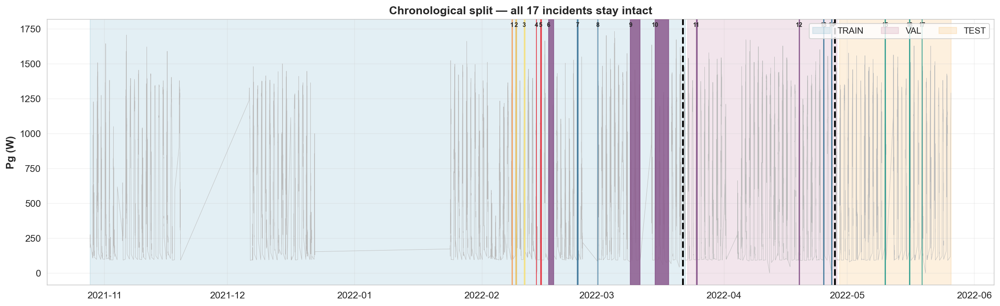
| Partition | Rows | Share | Anomalies | Period |
|---|---|---|---|---|
| Train | 10,863 | 60.2% | 1,245 (11.5%) | 2021-10-28 → 2022-03-22 |
| Validation | 4,219 | 23.4% | 176 (4.2%) | 2022-03-23 → 2022-04-28 |
| Test | 2,975 | 16.5% | 73 (2.5%) | 2022-04-29 → 2022-05-26 |
The verification that matters: zero incidents cut across a boundary. Note also that the training partition contains 1,245 anomalies and that none of them is used — training runs on the 9,618 healthy training points only. The anomalies in the training window are simply discarded, which is what "trained on healthy data" has to mean in practice.
One property of this split is uncomfortable and was kept deliberately: the three test incidents are all of type 3.1, a type appearing nowhere in training or validation. The final evaluation is therefore on a fault family the system has never encountered in any form. That is harder than a random split, and closer to what deployment on a new plant looks like.
Feature engineering
The raw sensors describe the plant's state; they do not describe whether that state is normal for the conditions. A power of 3 kW is excellent at dawn and alarming at noon. This section builds variables carrying that comparison internally and — more importantly — validates each one by its effect on detection rather than by how sensible it sounds.
Phase 1: four physical indicators
Four candidates were built first: yield ratio_pg_gti (power over
irradiance), thermal gap delta_tpv_ta (panel minus ambient
temperature), short-term power variation pg_diff, and rolling
variability ratio_std_30min. Each was scored by a Kolmogorov–Smirnov
test measuring how far apart the healthy and faulty distributions sit.
| Feature | KS (all faults) | KS (type 3) | Decision |
|---|---|---|---|
| ratio_pg_gti | 0.82 | 0.82 | Kept |
| delta_tpv_ta | 0.18 | 0.39 | Dropped |
| ratio_std_30min | 0.10 | 0.32 | Dropped |
| pg_diff | 0.08 | 0.22 | Dropped |
Three of the four physically motivated features failed the 0.35 threshold. The thermal gap in particular is the kind of variable that sounds authoritative in a report and carries almost no separation here. Keeping it would have cost nothing visible and quietly diluted the model — which is why the test was run before the model, not after.
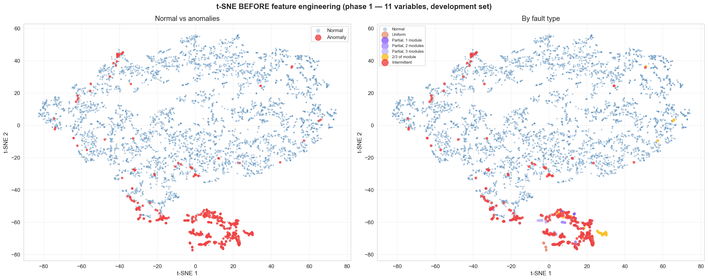
Projected in two dimensions, the anomalies do not yet form a separable region. Some structure exists at the edges, but the bulk of the faulty points sits inside the healthy cloud. Read as a diagnosis rather than a result, this says the feature space is not finished — which is what motivated Phase 2.
Phase 2: seven candidates for the subtle faults
Type 3 faults — smooth partial shading — are the ones the Phase 1 space misses. Seven further candidates were built specifically for them, all fitted on healthy training points only: a power residual against an expected value, a voltage deviation, a temperature-corrected efficiency, a current-to-irradiance ratio, a one-hour rolling yield, a local deviation, and a grid-to-inverter voltage ratio.
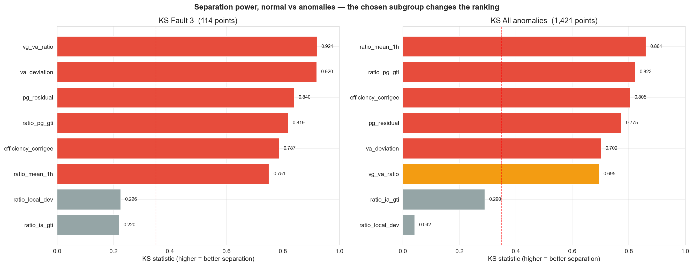
The two rankings do not agree, and the disagreement is the finding.
vg_va_ratio and va_deviation lead on type 3 faults
(KS 0.921 and 0.920) but fall to sixth and fifth on all anomalies;
ratio_mean_1h leads overall (0.861) and is only third on type 3.
Choosing a winner therefore depends entirely on which subgroup you look at. The
decision was made on the full anomaly set — the subgroup is too small to justify
optimising for it — and this figure is the record of that being a choice rather than
an oversight.
A protocol detail that constrained this whole section: type 3.1 has zero points in the development set. It exists only in the test partition. Features could therefore be designed against type 3.2 but never against 3.1 — which is exactly the guarantee needed for the final evaluation to mean anything.
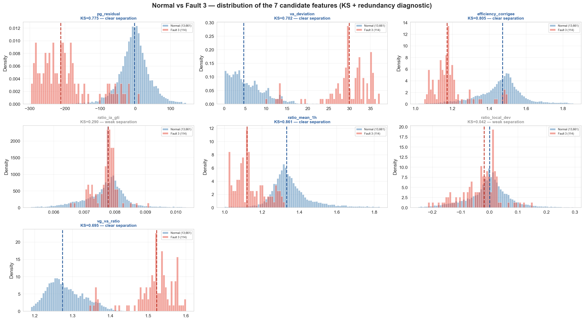
Reading the distributions rather than the KS numbers shows how each feature separates. Some shift their entire mass; others keep the same centre and grow a tail. That difference matters for a reconstruction model, which is sensitive to tails, and less so for a tree-based model, which is sensitive to partitions. Both labels on this figure — the KS cut and the redundancy flag — are computed at run time, not written by hand.
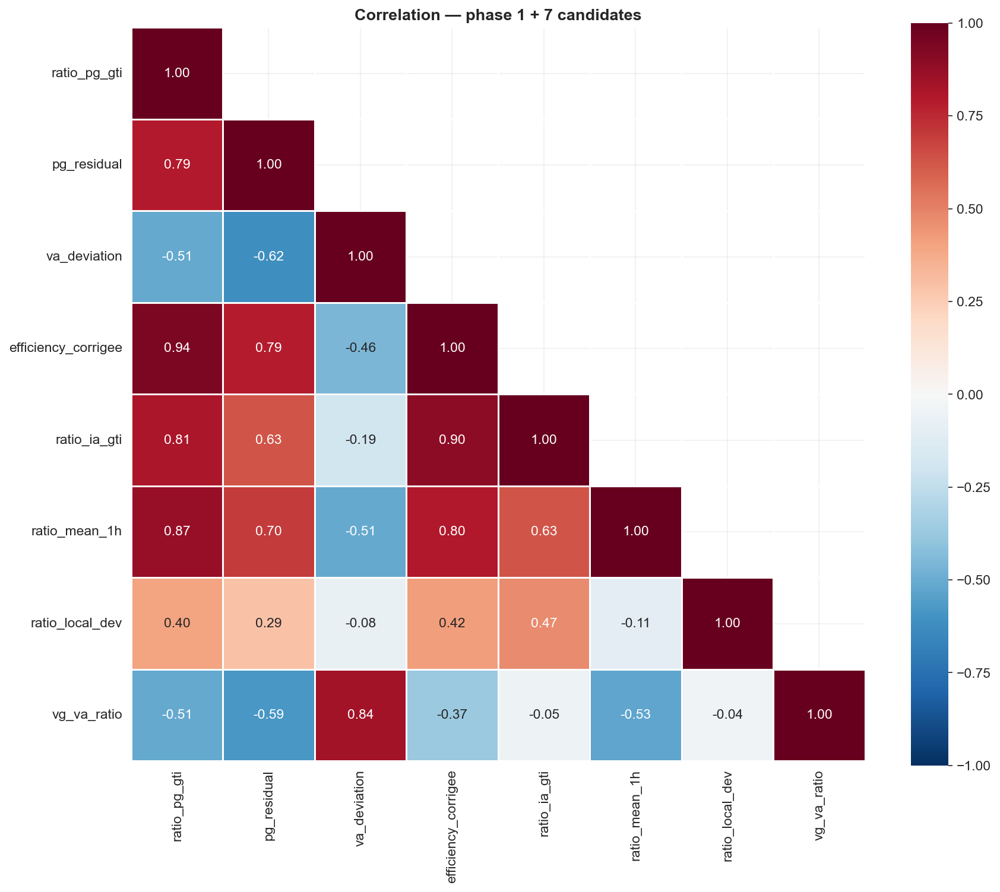
Two pairs are near-duplicates: efficiency_corrigee correlates at 0.944
with ratio_pg_gti, and ratio_ia_gti is essentially a
restatement of the 0.978 correlation between current and irradiance. Keeping both
members of a pair would double-weight one physical phenomenon in a model that
averages contributions. Both were dropped in favour of the simpler member.
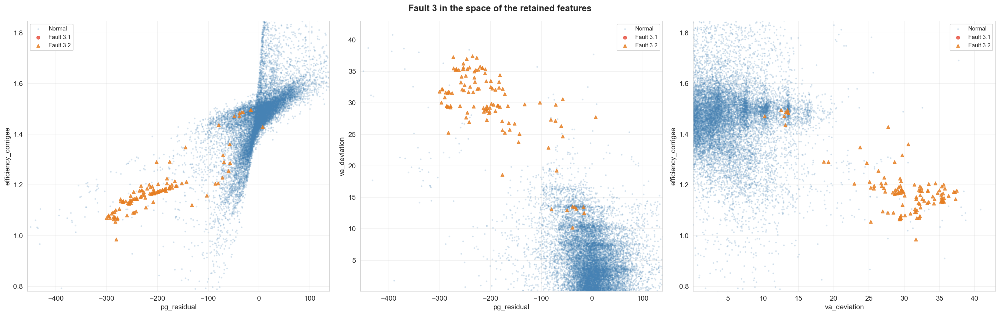
The two subtypes occupy different regions, which is a warning as much as a result: a feature set separating 3.2 well may not separate 3.1, and 3.1 is what the test partition contains. This figure is the reason the project never claimed that tuning on 3.2 would transfer — that claim is only settled at the very end, on the test.
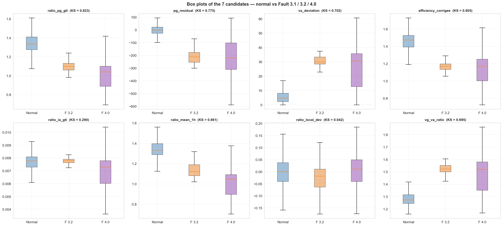
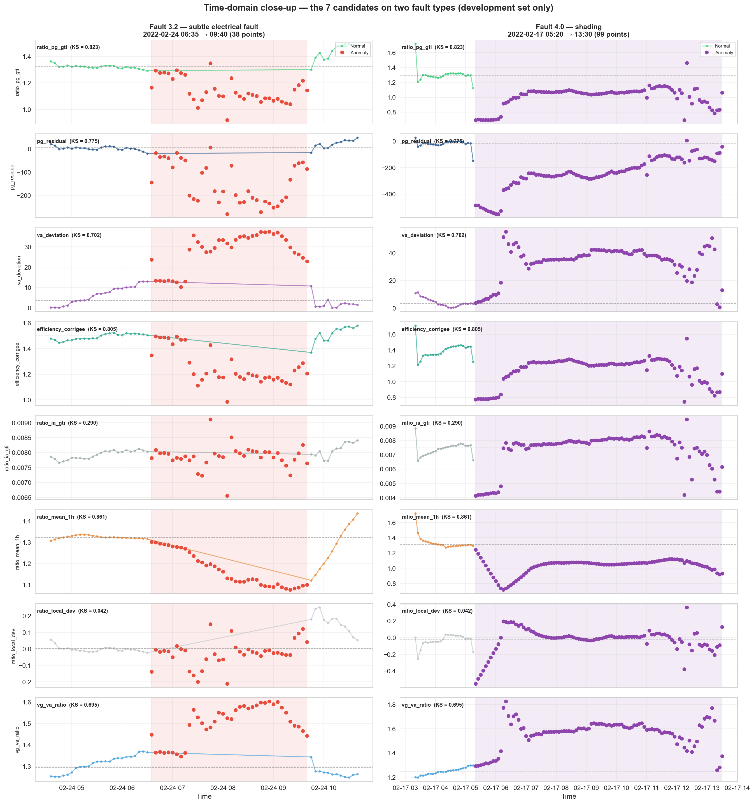
This is the most useful figure of the section. A feature that works should visibly break away inside the shaded fault window — and comparing the two columns shows that no single candidate reacts cleanly to both fault types. One responds to the abrupt family, another to the smooth family, none to both. That observation, made here at feature level, is the earliest justification for the model fusion built seven sections later.
Validating the selection by ablation
KS scores rank features in isolation. They say nothing about how a set of features behaves inside a model. So the selection was settled by ablation: twelve candidate sets, each fed to the same Isolation Forest, scored by PR-AUC on validation — with a guard rail rejecting any set that misses an entire fault episode, regardless of its score.
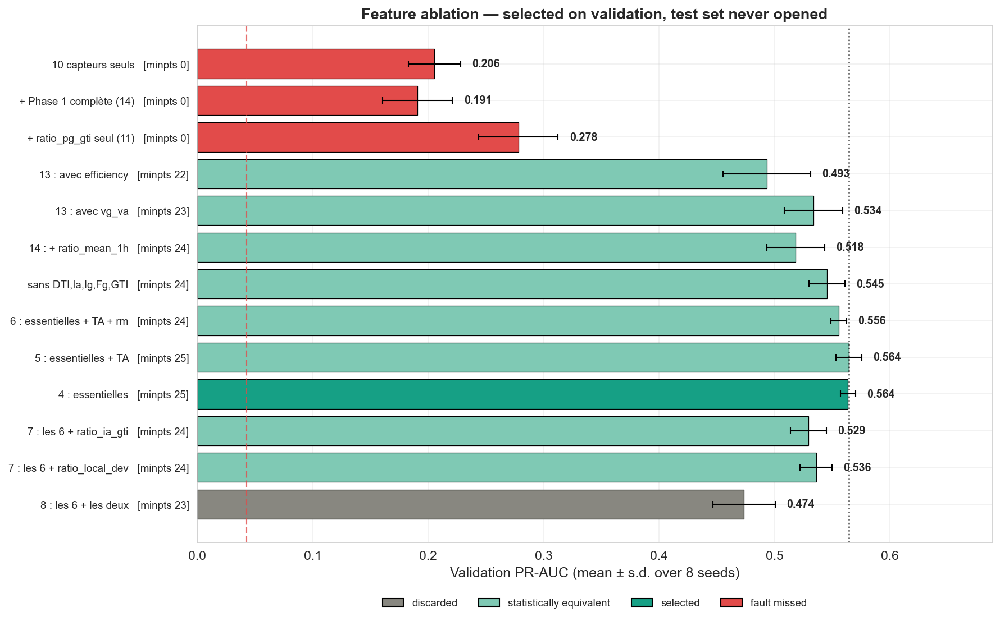
| Feature set | n | PR-AUC (val) | Lift |
|---|---|---|---|
| Ten raw sensors | 10 | 0.206 ± 0.022 | ×4.9 |
| Sensors + all Phase 1 | 14 | 0.191 ± 0.030 | ×4.5 |
| Sensors + ratio_pg_gti | 11 | 0.278 ± 0.034 | ×6.6 |
| Reduced sensor set | 10 | 0.545 ± 0.016 | ×12.9 |
| Four engineered features | 4 | 0.564 ± 0.006 | ×13.3 |
| The four + ratio_ia_gti | 7 | 0.529 ± 0.016 | ×12.5 |
| The four + both rejected | 8 | 0.474 ± 0.027 | ×11.2 |
Four features beat fourteen by a factor of three. The engineered variables do not merely add information — they let the model stop looking at ten raw channels whose variation is dominated by the sun rather than by the plant's health. Note the standard deviations too: the four-feature set is not only the best, it is the most stable across seeds (±0.006 against ±0.030), which matters more than the mean when a single model will be deployed. Adding a rejected candidate back in costs 0.035 PR-AUC, confirming the redundancy analysis quantitatively.
The retained set is pg_residual, ratio_pg_gti,
va_deviation and vg_va_ratio. One audit was run before
freezing it: va_deviation reaches values up to 181, far beyond its
median of 5.4, which would normally signal a broken sensor. Of the 53 points above
the 99.9th percentile, 52 are labelled anomalies. The extreme values are the signal.
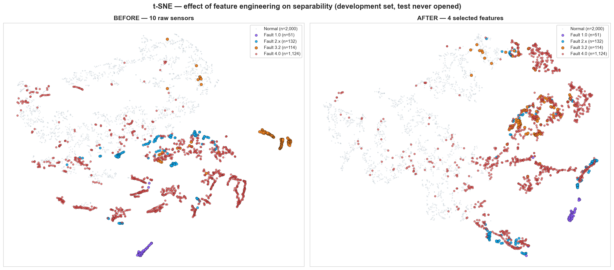
Left, ten raw sensors: anomalies dispersed through the healthy mass. Right, four engineered features: coherent anomalous regions. The caveat is stated in the notebook and repeated here — t-SNE is stochastic and does not preserve global distances, so this is an intuition aid, not evidence. The evidence is the ablation table above; this is what that ablation looks like.
Normalisation and leakage
A short section with consequences out of proportion to its length. Two normalisation strategies were compared, and they differ in what the scaler is fitted on.
- Outlier framing — fit the scaler, and the model, on everything. The model learns a mixture of healthy and faulty behaviour and is asked which points are unusual within it.
- Novelty framing — fit on the 9,618 healthy training points only. The model learns healthy operation as a reference, and any new point is measured against it.
Novelty is the correct framing for this problem, and it is also the one matching deployment: a plant in service produces a healthy baseline first and faults later. It was still measured rather than assumed — the next section quantifies the gap at more than a factor of two.
Leakage guards were made explicit and asserted in code rather than trusted: train strictly precedes validation, which strictly precedes test; the scaler sees healthy training rows only; no statistic computed on validation or test ever flows back into a fitting step. In a project where the model never sees a label, leakage is the failure mode hardest to notice — an unrealistically good score looks like success.
Isolation Forest
Before any neural network, a baseline. Isolation Forest isolates unusual points by random partitioning: an outlier needs fewer splits to separate from the rest. It assumes nothing about distribution shape and trains in seconds, which makes it the right instrument for testing the feature set — and, as it turned out, for testing the framing.
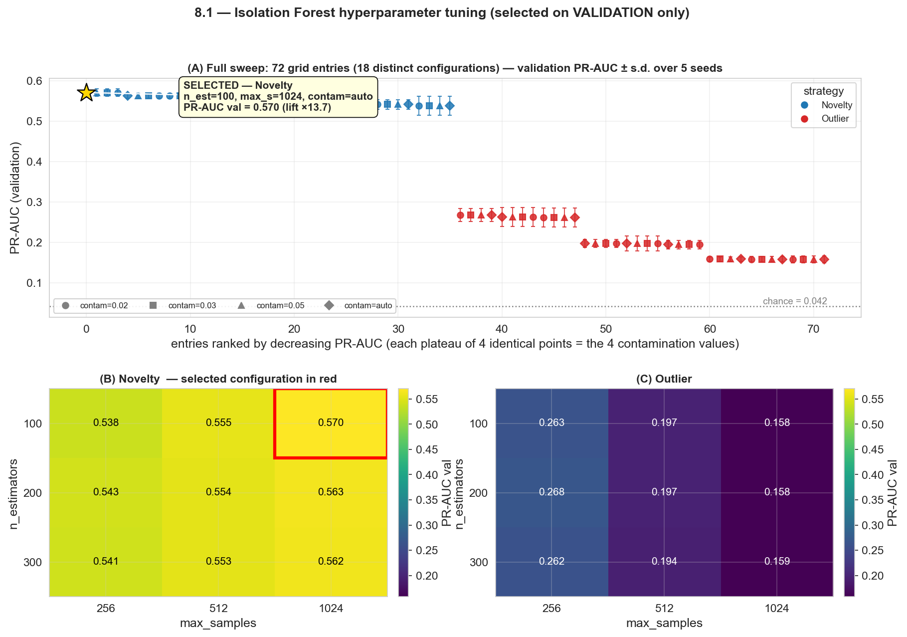
Two results, one expected and one not. The expected one: novelty framing reaches
0.570 PR-AUC against 0.268 for outlier framing — more than double, confirming the
previous section quantitatively. The unexpected one: the contamination
parameter has no effect whatsoever. Maximum PR-AUC spread across all its
values, at fixed tree parameters, is 0.000000, so the 72-point grid contains only 18
distinct configurations. Contamination only moves scikit-learn's internal decision
boundary, and PR-AUC reads the ranking, not the boundary. Reporting the grid as 72
configurations would have overstated the search fourfold.
Choosing an operating point
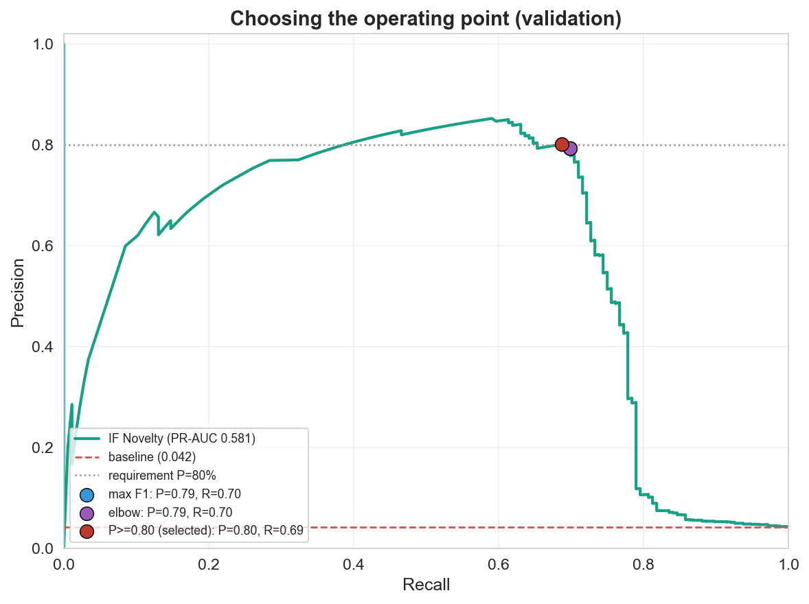
Maximum F1 and the elbow criterion select the same threshold, 0.7476, at precision 0.794 and recall 0.699. The retained criterion — highest recall subject to precision ≥ 0.80 — gives 0.7515, trading 0.011 of recall for the guarantee that four alarms in five are real. All three land within 0.004 of each other, which is itself worth knowing: on this detector the criterion barely matters. On the fused system, later, it will matter a great deal.
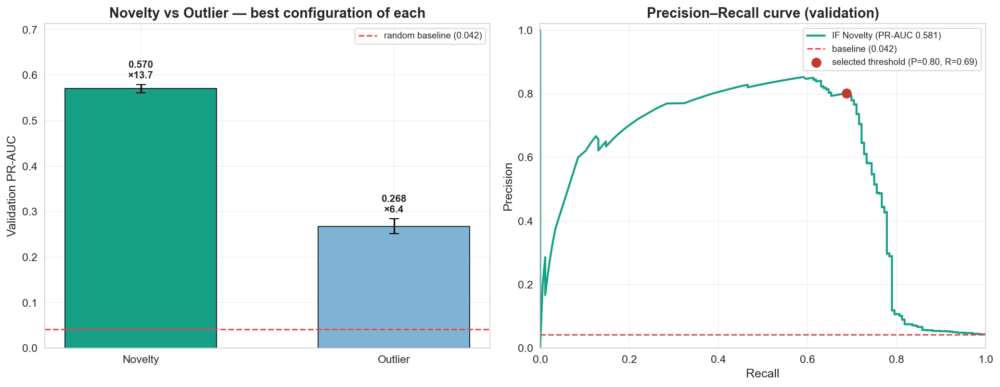
Why the baseline is not in the final system
The Isolation Forest performs respectably — 0.581 PR-AUC, all four validation episodes detected, median delay zero. It was still removed. Every fusion tested later shows the same thing: AE + LSTM scores 0.7234, and adding the forest brings it down to 0.6871. It correlates 0.628 with the dense autoencoder — both judge points in isolation — so it contributes little independent signal while diluting the sequence model's contribution. It remains in the notebook as what it was built to be: a reference point that made the feature ablation possible.
Dense autoencoder
An autoencoder compresses each measurement through a narrow code and rebuilds it. Trained on healthy data only, it becomes good at reconstructing normal operation and bad at reconstructing anything else — so the reconstruction error is itself the anomaly score, with no threshold learned and no label involved.
A result that contradicted the previous section
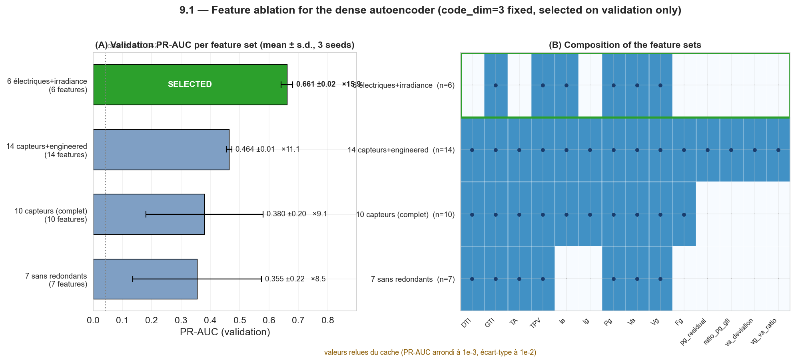
| Feature set | n | PR-AUC (val) | Lift |
|---|---|---|---|
| All ten raw sensors | 10 | 0.380 ± 0.20 | ×9.1 |
| Redundant sensors removed | 7 | 0.355 ± 0.22 | ×8.5 |
| Electrical + irradiance | 6 | 0.661 ± 0.02 | ×15.9 |
| Sensors + engineered features | 14 | 0.464 ± 0.01 | ×11.1 |
The ablation was repeated rather than reused — and it gave a different answer. The
Isolation Forest wanted four engineered features; the autoencoder does best
on six raw sensors, GTI, Pg, Va, Vg, Ia, TPV, and adding the
engineered features on top actively hurts (0.464 against 0.661). The explanation is
structural: an engineered ratio is a relationship between sensors made explicit, and
a reconstruction network learns those relationships itself from the raw channels.
Handing it both the ingredients and the recipe gives it correlated inputs it must
waste capacity reproducing. Reusing the forest's feature set without re-testing would
have cost roughly 0.20 PR-AUC.
Read the standard deviations again: ±0.20 on the ten-sensor set. Those runs disagree with each other almost as much as they disagree with the winner. A single run on that set could have reported anything between 0.18 and 0.58 — which is why every line of these ablations is three seeds rather than one.
Hyperparameters
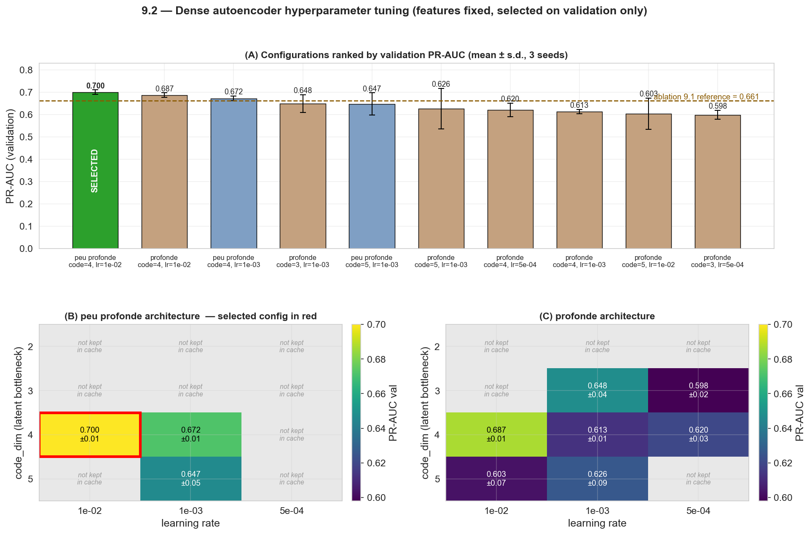
The code dimension dominates: 4 units in the bottleneck outperforms both 3 and 5. Too narrow and the network cannot reconstruct healthy operation either — normal points get high errors and precision collapses. Too wide and it reconstructs anomalies just as well as normal points, which is the failure mode specific to autoencoders: a perfect autoencoder is a useless detector. Shallow beats deep throughout, which is unsurprising on six input variables.
An ensemble, and an honest discrepancy
A single autoencoder is unstable. Five identical architectures on five seeds gave 0.693, 0.666, 0.537, 0.656 and 0.691 — a spread of 0.156 between the luckiest and unluckiest run. Reporting the best would be a choice, not a result. The deployed detector averages the reconstruction errors of all five, reaching 0.6848, ×16.4 over baseline.
The ensemble does not beat its best member (0.6848 against 0.693), and was never expected to. It beats the expected member — the mean of 0.6486 ± 0.0576 — which is what you actually get when you train once and deploy. Ensembling trades the chance of a lucky seed for the certainty of avoiding an unlucky one.
One discrepancy is documented rather than hidden. The hyperparameter grid ranks
lr = 1e-2 first, at 0.700 against 0.672 for lr = 1e-3. The
deployed ensemble uses 1e-3. The gap of 0.028 is of the same order as the seed-to-seed
standard deviations on both configurations (0.010 and 0.010 across three seeds each),
and 1e-3 converged far more regularly. An assertion in the notebook compares the
documented learning rate against the one written in the deployed config file and fails
loudly if they ever diverge.
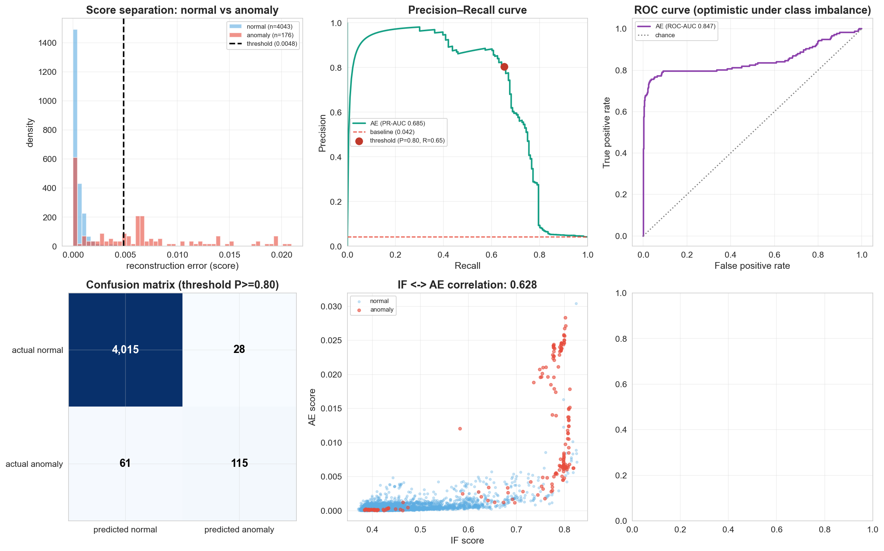
Two panels deserve attention. The ROC curve reads 0.8469 while the PR curve reads 0.6848 — the familiar gap on imbalanced data, and the reason ROC appears here with a warning rather than as a headline. And the correlation with the Isolation Forest is 0.628: high enough to confirm the two models see the same phenomena, which is what later made the forest redundant in the fusion.
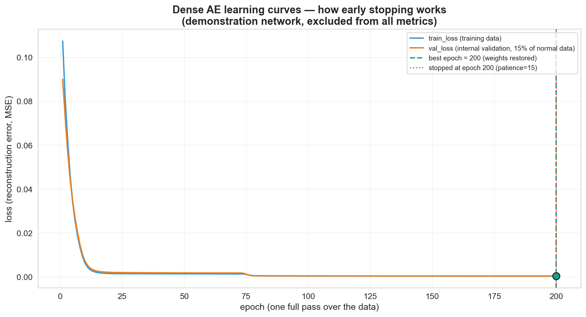
Training and validation losses descend together and stay close — 0.00037 against 0.00043 at the end — with no divergence, so the network is not memorising its training set. The best validation epoch is the last one, meaning early stopping never triggered within the 200-epoch budget and the model was still improving when it stopped. The honest reading is that the ceiling here is the architecture, not the training time.
LSTM autoencoder
The dense autoencoder judges each measurement in isolation. That works for abrupt faults and poorly for smooth ones: a slow shading episode is unremarkable at every individual point and abnormal only as a trajectory. The second detector therefore reconstructs sequences instead of points — an LSTM encoder compresses a window of consecutive measurements into a latent code, and an LSTM decoder rebuilds the window.
Sequences are built with the same seven-minute rule as everything else: a window is valid only if its points are contiguous in real time, so none of them straddles a night. That costs 1,209 healthy training points at segment edges, which is the price of not fabricating transitions that never happened.
Viability first
Before investing in a hyperparameter search, one question: does a sequence model see anything the point models miss? A first LSTM at 60-minute windows scored a disappointing 0.398 PR-AUC — well below the Isolation Forest's 0.581 and the autoencoder's 0.685.
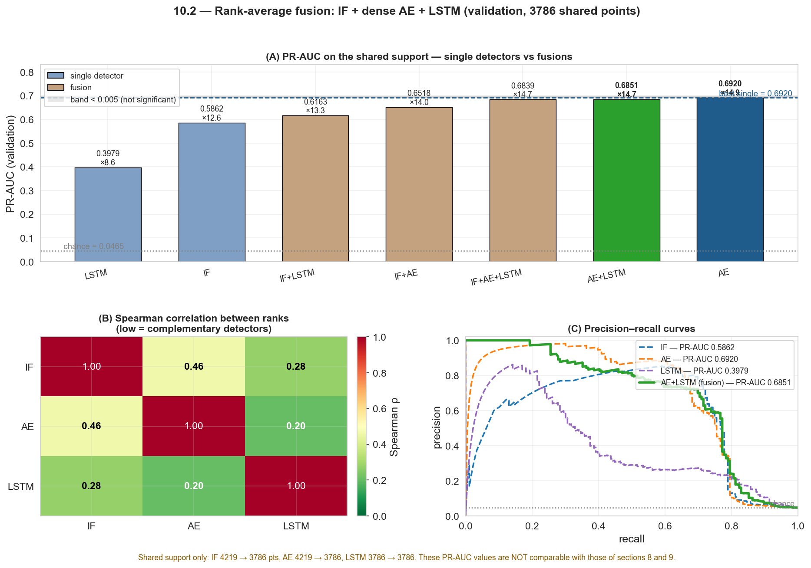
This figure records a negative result that was kept rather than deleted. On the 3,786 common points, the best fusion (AE + LSTM, 0.6851) is worse than the best single detector (AE alone, 0.6920). Fusion was not paying off. But one number justified continuing: the best fusion with the LSTM scores 0.6851 against 0.6518 for the best fusion without it. The LSTM was contributing something real while being individually weak — and the correlations confirmed it, at 0.482 with the forest and 0.581 with the autoencoder, both well below the 0.628 the two point-wise models share. That is what justified the tuning that follows, and it is the moment the project could have taken the wrong turn.
Phase A: which lever actually matters
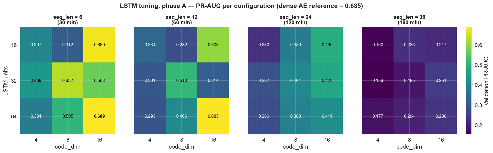
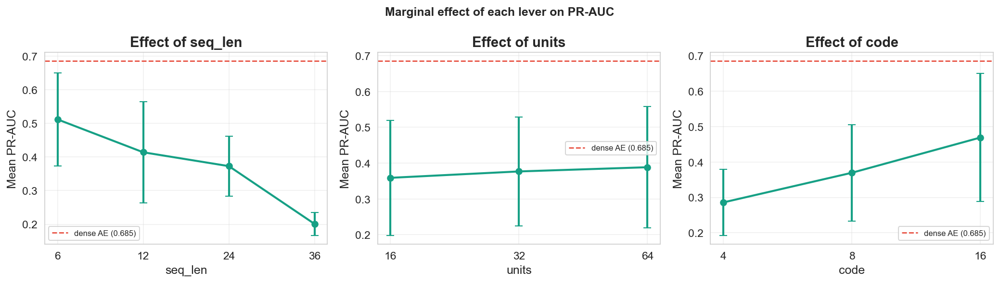
The second figure is the one worth reading. Taking the median PR-AUC across every configuration sharing a lever value isolates each lever's effect: sequence length spans 0.301 between its best and worst value, code dimension 0.193, and the number of units only 0.063. Shorter windows win decisively — a median of 0.505 at six steps against 0.204 at thirty-six. A long window dilutes a localised anomaly across many normal steps and loses points at every segment boundary. The best configuration reaches 0.6891, and three configurations hit the 400-epoch ceiling without early stopping, so their scores are flagged as underestimates rather than quietly ranked.
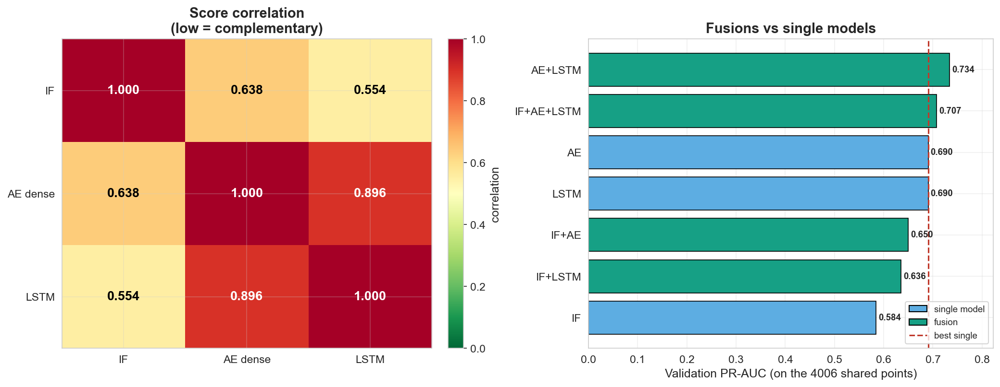
With a properly tuned LSTM the picture inverts: fusion now beats the best single detector, 0.7341 against 0.6903, a gain of +0.0438. But the correlation panel raises a flag — the tuned LSTM correlates 0.896 with the dense autoencoder, against 0.581 for the untuned one. Tuning made it stronger and, simultaneously, more redundant. The fusion still gains, so the two are not interchangeable, but the margin narrowed with every point of performance added.
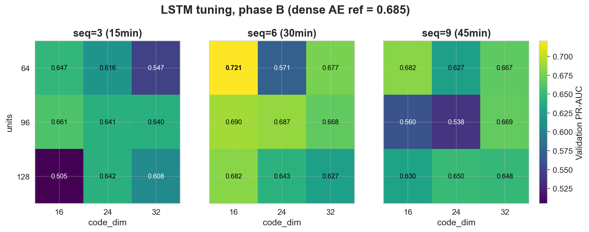
Phase B searched around the Phase A winner and confirmed it: six steps, 64 units, code dimension 16, at 0.7205. Everything nearby is worse — 96 units gives 0.6904, 128 gives 0.6823, nine steps gives 0.6821. A plateau would have been comfortable; a sharp peak means the configuration is a real optimum on this data, and also that it may not transfer to a plant with a different sampling rate.
The deployed ensemble
As with the dense autoencoder, five networks on five seeds rather than one. Members score 0.600, 0.676, 0.598, 0.639 and 0.645 — mean 0.6316 ± 0.0294 — and the ensemble reaches 0.6583.
Here the ensemble is a deliberate step backwards on paper. The single tuned LSTM scored 0.6903, and fusing it with the autoencoder gave 0.7341; the ensemble gives 0.6583 and fuses to 0.7234. Roughly one hundredth of PR-AUC was traded for a detector whose behaviour does not depend on a seed drawn once. The single model's 0.6903 is a sample from a distribution with a 0.029 standard deviation; the ensemble's 0.6583 is what the system delivers every time it is rebuilt. On a system meant to run unattended, the second number is the one that can be promised.
Fusion
Two detectors that fail on different things are worth combining — but their scores are not comparable. Both are reconstruction errors, computed on different quantities, living at different magnitudes: the autoencoder's validation errors have a median of 0.000297, the LSTM's 0.000106. Averaging them raw lets the larger scale decide every alarm.
The fix is to stop comparing the two scores to each other and compare each to a fixed reference of its own. Each detector's raw error is converted into its rank within a frozen reference vector — that detector's own validation errors — and the two ranks, now both in [0, 1] and both meaning "how unusual relative to a known distribution", are averaged.
Show code — ranking against a frozen reference
def _rang(self, valeurs, reference_triee):
"""Rank within the pre-sorted reference: fraction of reference <= value.
A rank is NEVER recomputed on the current batch — that would be transductive."""
return np.searchsorted(reference_triee, valeurs, side="right") / len(reference_triee)
r_ae = self._rang(err_ae, self.ref_ae) # reference: 4,219 validation points
r_lstm = self._rang(err_lstm, self.ref_lstm) # reference: 4,006 validation sequences
score_fusion = (r_ae + r_lstm) / 2
This is where the streaming constraint from the first section becomes a line of code.
The natural way to rank is rankdata over the batch — but in production the
batch is one point, and its rank among itself is always 1.0, so every measurement would
be an alarm. Ranking against a frozen reference produces a score meaning the same thing
whether it is computed on four thousand points or on one.
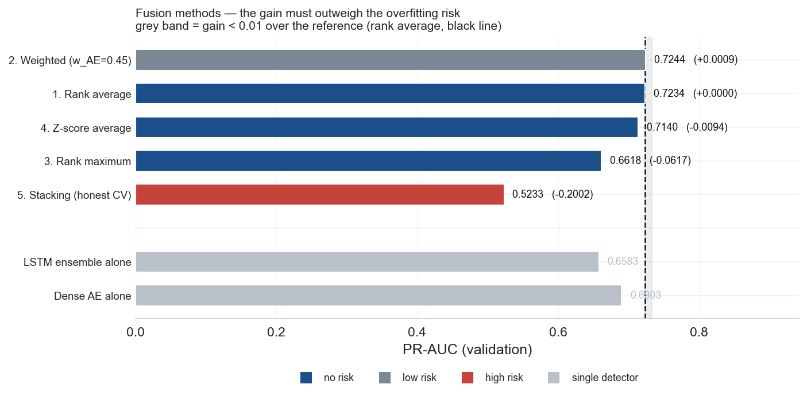
| Method | PR-AUC | Gain | Overfitting risk |
|---|---|---|---|
| Weighted average (w = 0.45 chosen on val) | 0.7244 | +0.0009 | Low but real |
| Rank average | 0.7234 | — | None |
| Z-score average | 0.7140 | −0.0094 | None |
| Rank maximum | 0.6618 | −0.0617 | None |
| Stacking (honest cross-validation) | 0.5233 | −0.2002 | High |
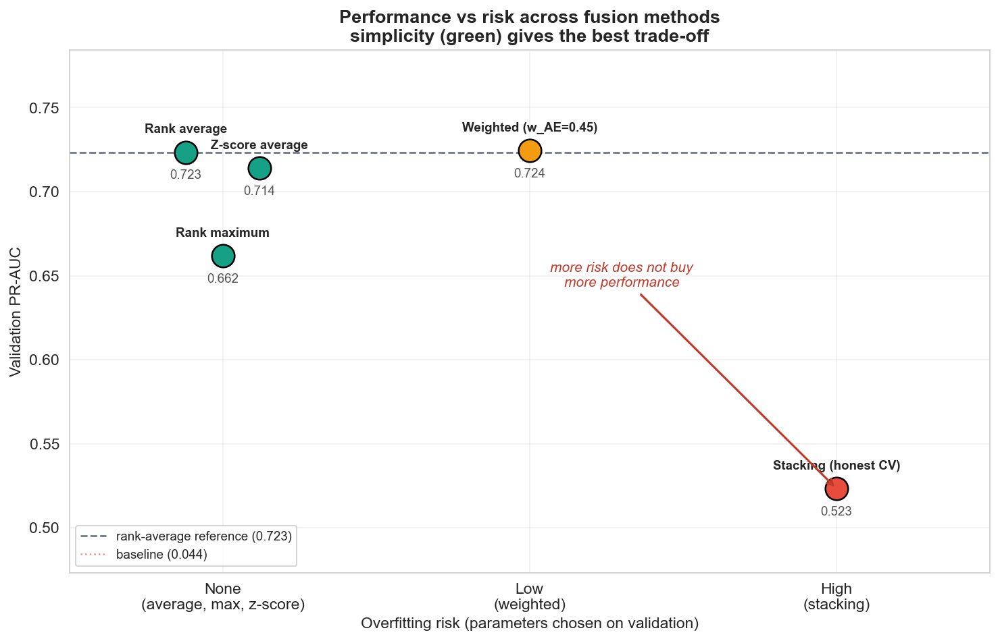
The weighted average wins by 0.0009, and buys that with a weight fitted on the same validation set used to report the number. Plain rank averaging was kept: a nine-ten-thousandths gain does not justify a parameter chosen on the evaluation data. The stacking result is the instructive one — a meta-model, evaluated with honest cross-validation, scores 0.5233, far below both of its inputs. With 176 anomalies to learn from, the meta-model overfits comprehensively. Evaluated dishonestly it would have topped this table, which is precisely why the second axis of this figure exists.
On the common support of 4,006 points, the retained fusion reaches 0.7234 against 0.6903 for the best single detector: +0.0331, earned from the two models disagreeing usefully rather than from either being better.
Decision threshold
A fused score is a ranking. Turning it into an alarm requires a cut, and that cut encodes an economic judgement the model cannot make for itself.
On a PV plant the two errors are asymmetric. A false positive sends a technician to check a healthy string; a false negative leaves a fault running for weeks. The threshold is therefore selected by maximising F2 on validation — the F-measure weighting recall twice as heavily as precision — rather than F1, which treats the two as equals.
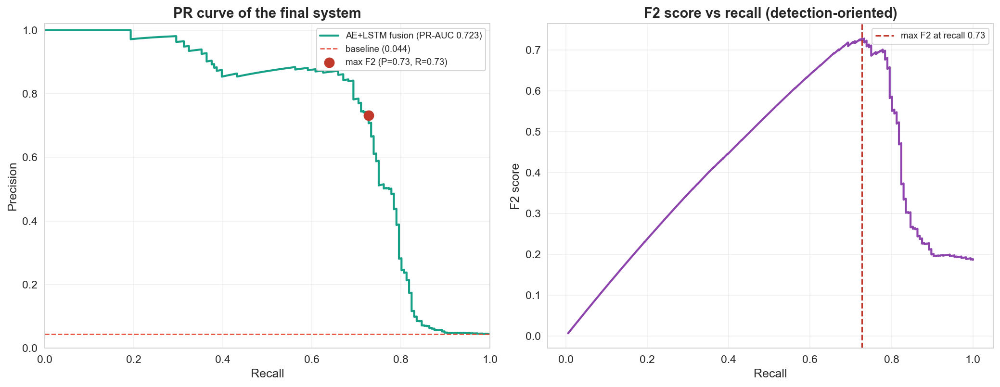
| Criterion | Threshold | Precision | Recall | Missed |
|---|---|---|---|---|
| F2 maximum | 0.9460 | 0.731 | 0.727 | 48 / 176 |
| Recall ≥ 0.80 | 0.8107 | 0.283 | 0.801 | 35 / 176 |
| Recall ≥ 0.85 | 0.4572 | 0.072 | 0.852 | 26 / 176 |
| Recall ≥ 0.90 | 0.2648 | 0.049 | 0.903 | 17 / 176 |
The operating-point table is more informative than the chosen threshold. Pushing recall from 0.727 to 0.801 costs precision 0.731 → 0.283: two thirds of alarms become false. Pushing to 0.85 collapses precision to 0.072, barely above the 0.044 base rate — at that point the detector is flagging almost everything. Recall does not degrade gracefully here, it hits a wall. That is a property of the system, not a tuning decision, and it is the honest answer to "why not just set the threshold lower".
Packaging the system
The deployed system is ten networks, two scalers, two reference vectors and one threshold — about 2.8 MB in total, versioned in the repository so that a clone can reproduce every result without retraining anything.
| Artefact | Contents |
|---|---|
ae/ae_0..4.keras | Five dense autoencoders, code dimension 4 |
lstm/lstm_0..4.keras | Five LSTM autoencoders — 6 steps, 64 units, code 16 |
scaler_ae.pkl, scaler_lstm.pkl | Fitted on healthy training rows only |
ref_score_ae.npy, ref_score_lstm.npy | 4,219 and 4,006 frozen validation errors — the rank references |
config.json | Features, hyperparameters, and the 0.9460 threshold |
These artefacts are only meaningful together. Retraining the networks changes the error scale, which invalidates the references, which invalidates the threshold. The notebook makes that dependency explicit: the retraining switch is off by default, and the section that would trigger it states in its own comment that references and threshold must be recomputed immediately afterwards — which the following section then does.
A single class, DetecteurPV, loads those artefacts and exposes one method.
It is defined once in the notebook and copied verbatim into src/detecteur.py
for deployment, with the notebook remaining the source of truth. The next section
verifies that the copy behaves identically.
Final validation
This section exists because a saved model is not the same object as the model that produced the numbers above. Everything is reloaded from disk and re-verified before the test partition is opened.
The saved networks reproduce the reported scores
The five reloaded autoencoders, scored on the 4,219 validation points, reproduce the section 9 scores with a maximum deviation of 0.00e+00. The five LSTMs do the same on 4,006 sequences. Not "close" — bit-identical.
Why the rank references had to be recomputed
The repository also contains two frozen score vectors from an earlier version of the project, which retrained its ensembles on every run. They are kept deliberately, as evidence for a point that is otherwise abstract: a rank reference belongs to the networks that produced it.
| Detector | Median, old reference | Median, deployed | Rank a median deployed point receives |
|---|---|---|---|
| Dense AE | 0.000595 | 0.000297 | 0.243 instead of 0.500 |
| LSTM | 0.000089 | 0.000106 | 0.577 instead of 0.500 |
A perfectly median point from the deployed autoencoder — true rank 0.500 — would be scored 0.243 against the old reference, an error of 0.257 on a scale whose alarm threshold is 0.946. Reusing a reference across a retraining would not produce a slightly wrong score; it would produce a systematically deflated one, and the system would go quiet. The notebook asserts at run time that the two references are still distinct, so the demonstration cannot silently rot into a comparison of a thing with itself.
Two independent paths, one score
The score is computed twice by code written independently — once from the models used throughout the notebook, once from the artefacts reloaded from disk. Maximum point-by-point deviation: 0.00e+00 across 4,006 points, with identical PR-AUC to six decimals. Instantiating the deployable class and feeding it the same data gives the same answer again, including through the streaming path with its six-point sliding window. One rank convention, one score, one threshold, three implementations.
Validation performance of the final system at the 0.9460 threshold: 128 true positives, 48 false negatives, 47 false positives; 4 of 4 episodes detected, median delay 0 steps.
A guard cell runs immediately before the test is opened, verifying that no test metric has been computed anywhere earlier in the notebook. The test scores exist as arrays from section 10 onwards — they were never confronted with their labels. The cell also reports what the test contains: 3 episodes, all of type 3.1, a type absent from every development partition.
The test partition
Opened once, with the threshold already fixed, after feature ablation, hyperparameter search, ensemble sizing, fusion selection and threshold calibration had all been settled on validation.
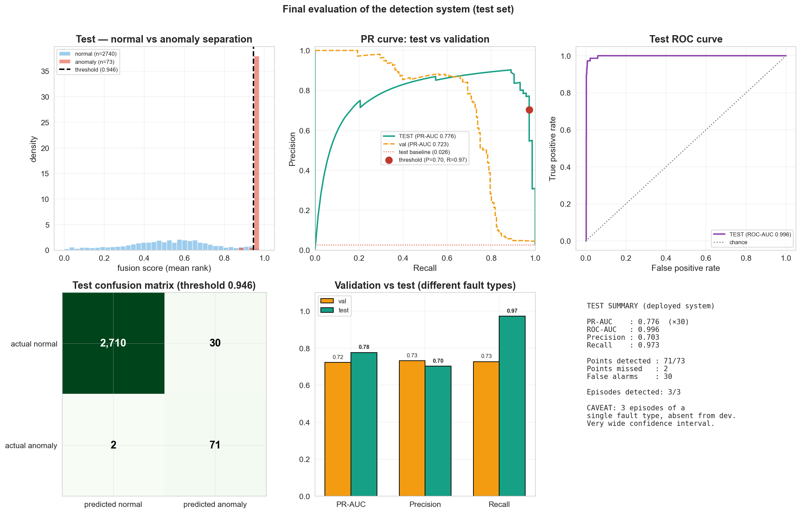
| Metric | Validation | Test |
|---|---|---|
| Points scored | 4,006 | 2,813 |
| Anomaly base rate | 4.4% | 2.6% |
| PR-AUC | 0.7234 (×16.5) | 0.7765 (×29.9) |
| ROC-AUC | — | 0.9964 |
| Precision | 0.731 | 0.703 |
| Recall | 0.727 | 0.973 |
| F2 | 0.728 | 0.903 |
| Episodes detected | 4 / 4 | 3 / 3 |
| Median detection delay | 0 steps | 0 steps |
At the 0.9460 threshold the test confusion matrix reads 71 true positives, 2 false negatives, 30 false positives, 2,710 true negatives. All three episodes were caught on their first scored point.
The test recall (0.973) is far above the validation recall (0.727), which is not the usual direction and must not be read as the model improving. The two partitions contain different faults: test carries type 3.1 exclusively, validation carries 3.2 and 4.0. The system happens to be better at the family that landed in the test window — and, since 3.1 appears nowhere in development, this is genuinely out-of-family generalisation rather than tuning paying off. With three episodes, the honest statement is that the point-level metrics are informative and the 3/3 episode score is a small sample.
Running system
A detector that only exists inside a notebook has not been shown to work on a stream. The second half of the project ports the model into a pipeline that scores measurements one at a time, on infrastructure starting from a single command.
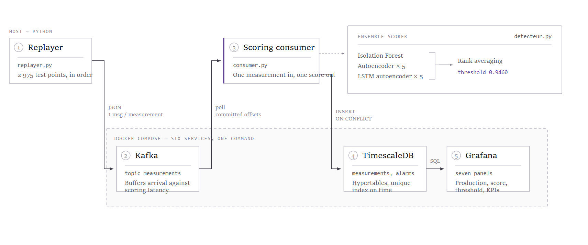
- Replayer — publishes the test partition to a Kafka topic, one measurement per second, standing in for the plant.
- Consumer — maintains a six-point sliding window, scores it through the ten networks, writes to TimescaleDB and publishes threshold crossings to an
alarmstopic. - TimescaleDB — hypertables for measurements and alarms, with a unique index on time so that replaying the demo updates rows instead of duplicating them.
- Grafana — eight panels provisioned from versioned JSON, so a clean volume comes up already configured.
The window buffer
Kafka delivers points; the LSTM needs six contiguous ones. The consumer keeps a sliding buffer that clears itself whenever the gap between two arrivals exceeds seven minutes — the same night rule as in the notebook, now enforced on a live stream rather than on a dataframe.
Of the 2,975 replayed points, 2,813 receive a score. The other 162 are the five first points of each daylight segment, which have no complete window behind them. They are still written to the database with a null score rather than dropped: the sensor did record them, and a gap in a Grafana series should mean a gap in the data, not a gap in the model's coverage. That distinction is invisible in a notebook and immediately visible on a dashboard.
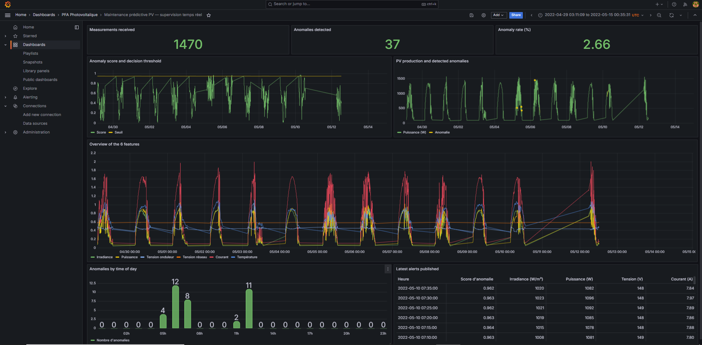
Throughput is the honest weak point: scoring one measurement takes about 0.9 s, because the ten networks are queried one after another. That is 300× faster than the five-minute measurement cadence, so it is comfortable for one plant and would not survive scoring many from a single process.
Limits
- One plant, one dataset. Everything here comes from a single installation in La Réunion. The pipeline transfers; the threshold does not, and would have to be re-derived from a healthy period on any new site.
- Three test episodes. 3/3 detected is a good result on a small sample. The point-level metrics rest on 2,813 measurements and are far more informative than the episode count.
- ROC-AUC is flattering. 0.9964 looks conclusive and largely reflects the 2.6% positive rate. PR-AUC at 0.7765 — a lift of ×29.9 over the base rate — is the figure to compare against.
- Recall hits a wall. The operating-point table shows precision collapsing from 0.731 to 0.283 for seven points of extra recall. Some faults are simply not separable in this feature space, and no threshold fixes that.
- Labels are used — just not for training. The models never see a fault, but the labels select the threshold and produce every number reported here. A site with no labelled history at all would need a different way to set the cut.
- Throughput. 0.9 s per point, ten networks queried serially. Fine for one plant, unsuitable for a fleet.
- Frozen references age. The rank references are a snapshot of a healthy period. Panel ageing shifts the healthy baseline over years, which would slowly deflate every score.
Next steps
- Batch the ten networks into a single vectorised call and drop per-point latency by an order of magnitude.
- Monitor drift on the reference distributions, and define a re-calibration procedure recomputing references and threshold together.
- Attribute each alarm to a feature — which of the six sensors drove the reconstruction error — so an alert says where to look, not only when.
- Validate on a second plant, which is the only real test of whether the approach generalises.